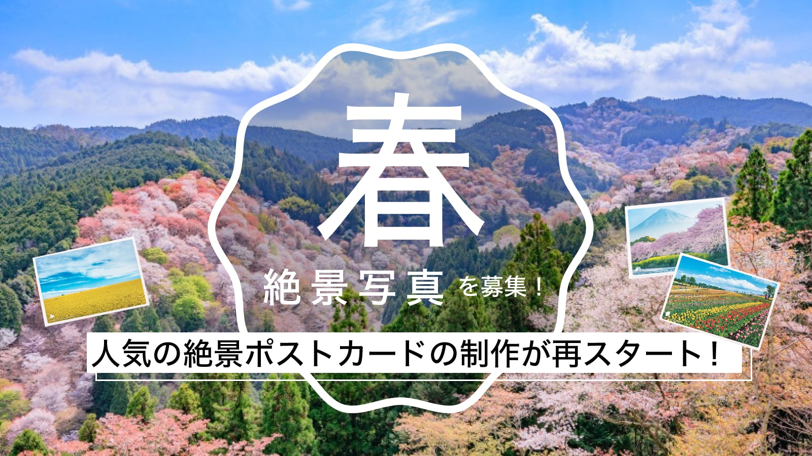
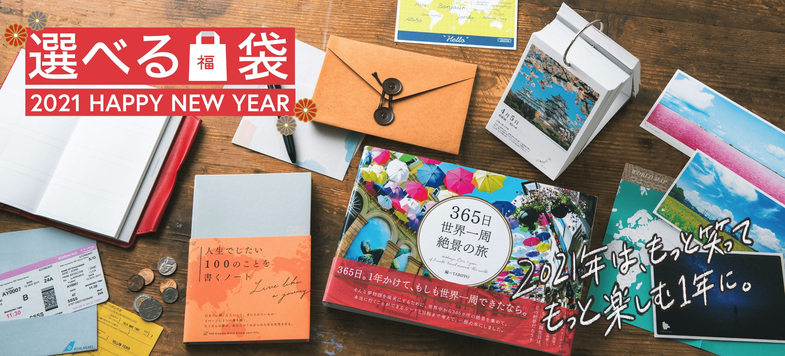

PAS-POL -旅のモノづくりブランド-｜TABIPPO
PAS-POL -旅のモノづくりブランド-｜TABIPPO
旅に出よう。
僕たちが作りたいのは
持っているだけで旅に出たくなるモノ。
持っているだけでわくわくするモノ。
それは新しい時代の“パスポート”
僕たちが作るものは、
そんな、存在でありたい。
そして、人と人が繋がる
こんな時代だからこそ、
僕たちは、みんなでひとつのモノを
作ることを追求したい。
それは、自分と世界を繋げる
旅のモノづくりブランド


NEWS
MORE

人気の絶景ポストカードの制作が再スタート！日本の「春」の絶景を大募集します
2021.5.14
こんにちは、TABIPPOの中 美砂希です。 東急ハンズやLOFTにて販売されている、旅好きな方とつくってきたPAS-POLの絶景ポストカードですが、久しぶりに制作が決定しましたのでお知らせいたします。 今回の制作は、四季に合わせて募集をしていきます。年間を通して募集をするので、彩り豊かな四季折々の写真のご応募をお待ちしております。まずは、春の風景写真を募集いたします！ 現在の予定では以下のスケジュールで募集を行い（変更の可能性あり）、春以降募集の際にはまた、改めてお知らせをいたします。 &nb ...

新年を新たな気持で迎える！PAS-POLより、人気商品が詰まった「選べる」福袋の発売がスタート
2020.12.10
今年は、いろんなことがあった1年でした。2021年は、もっと笑ってもっと楽しむ1年に。 世界の旅先に想いを馳せて、日本の魅力を再発見した2020年。旅ができることは当たり前じゃなかった。そんなことを気付かされた年になりました。 来年こそは、徐々に国内外を自由に行き来することができますように。 未来への予定を立てたり、絶景を眺めながらあこがれの場所や再訪したい場所をピックアップしたり。ワクワクした気持ちになって新たな気持で新年を迎えられるPAS-POLグッズを詰め込み、2種類の福袋をご用意いたしま ...

【10/7募集箇所更新】世界遺産フォトグラファーとつくる『365日世界遺産絶景の旅』。不足場所の「旅人の声」を募集中！
2020.10.2
現在制作中の「世界遺産」だけを365箇所集めた書籍『365日世界遺産絶景の旅』に掲載する、旅人の声を9月末まで募集しておりました。 約100名の方からたくさんの感想コメントをいただき、365箇所分のうち、211箇所まで集まりました。ご応募いただいたみなさま、本当にありがとうございます…！ しかし、あと132箇所が残っている状態です…なんとか、365箇所まで近づけたく、募集期間を延長することにしました。（募集するのは不足場所のみとなります） この場所に行ったことがある！という方は、感想コメントをご ...

『365日 世界遺産 絶景の旅』旅人の声募集箇所一覧
2020.9.2
ヨーロッパ サンマリノ １、サンマリノ歴史地区とティターノ山 イタリア 2、フィレンツェ歴史地区 3、ドロミーティ 4、ピサのドゥオモ広場 5、ポルトヴェネーレ、チンクエテッレ及び小島群 6、ローマ歴史地区、教皇領とサン・パオロ・フオーリ・レ・ムーラ大聖堂 7、オルチア渓谷 8、アルベロベッロのトゥルッリ 9、アマルフィ海岸 10、ヴェネツィアとその潟 バチカン 11、バチカン市国 マルタ 12、ヴァレッタの市街 スイス 13、アルプス ユ ...

365ヶ所の「旅人の声」を集めます！世界遺産フォトグラファーとつくる『365日 世界遺産 絶景の旅』
2020.9.2
こんにちは。TABIPPOの中です。 先日、「365絶景シリーズ」の新作、『365日 北海道 絶景の旅』が発売されたばかりではありますが、実は新たな「365絶景シリーズ」の新作の制作がすでに動き出しているんです！ 今回のテーマは「世界遺産」。写真は、40年間に渡り世界中を駆け回り、世界遺産を中心に空気感のある写真を追求し続けている世界遺産写真家の富井義夫さんのお写真をすべて使用させていただきます。 旅好きなみなさんのリアルな声を集めます 過去の絶景シリーズでも集めていた「旅人の声」 ...

#世界でいちばん美しい旅 を集めて、一冊の本を作ろう。私たちがいま本をつくる理由。
2020.5.26
「旅に出たい。」 この記事を読んでいる人の中には、この環境で気持ちが落ち着かない人が多いのではないでしょうか。旅が日々の楽しみだった。次の休みはどこに行こうか、なんて考える時間が大好きだった。最強のパスポートがあってもどこにも行けやしない。 世界中の人達が外出を制限されている中、TABIPPOができることは何なのか。 わたしたちは気付きました。旅に出ることができないだけで、こんなにも心が枯れてしまいそうになること。 わたしたちは気付きました。こんなにも旅が好きだったんだということを。 だから、わ ...